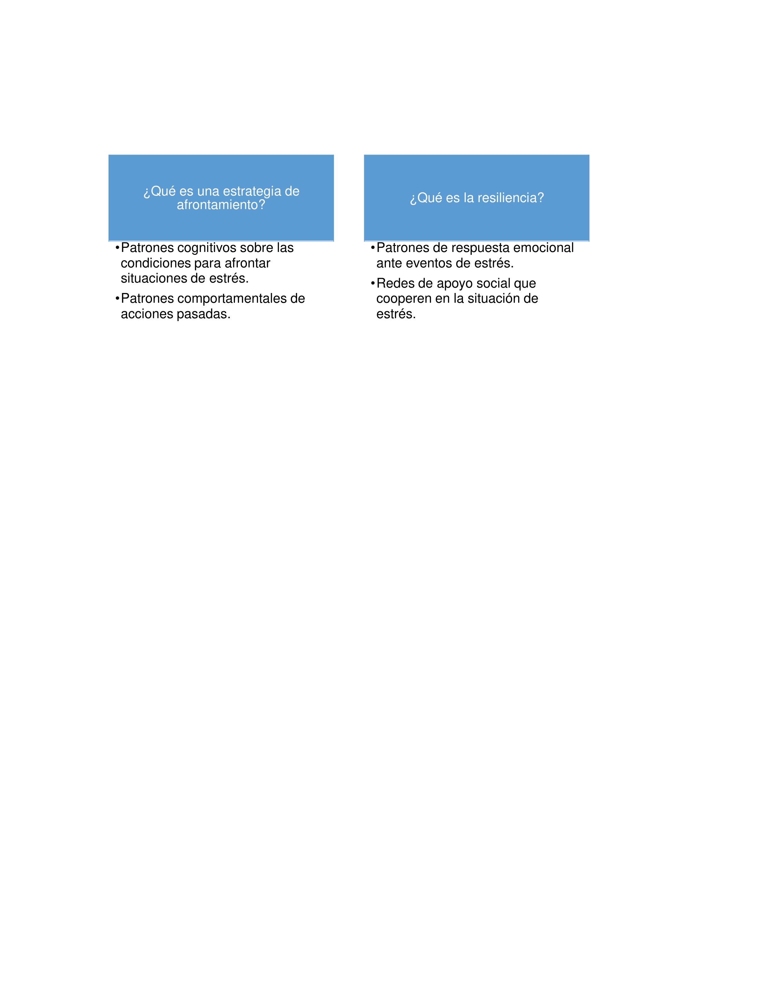

1Universidad de San Buenaventura Medellín, extensión Armenia (Quindío). Dirección: Barrio Sesenta Casas, Cra. 23d #4-07, Armenia, Quindío.
2Universidad de San Buenaventura. Dirección: Carrera 56C N° 51-110 Centro – Medellín, Antioquia.
*Autor de contacto. Docente investigadora de la Universidad de San Buenaventura Medellín extensión Armenia. Correo: olga.pineda@usbmed.edu.co
Resumen
Los respondedores de emergencias son la primera línea de apoyo para la atención de las complejidades que implica cualquier desastre. Sin embargo, los respondedores se someten a un gran estrés emocional, adversidad y riesgos laborales durante las emergencias con potenciales efectos sobre su salud mental. No solo existe un vacío institucional de la atención de la salud mental de los respondedores, sino que su salud mental debe configurarse como una condición específica de su formación. Se plantea este ejercicio como respuesta al vacío institucional de la atención de la salud mental de los respondedores de emergencias. El objetivo de este capítulo es predecir los factores de resiliencia ante eventos estresantes según los estilos de afrontamiento presentes en un grupo de bomberos voluntarios del departamento del Quindío (Colombia). Se empleó un método cuantitativo, descriptivo-correlacional con alcance predictivo. La población objeto fueron los bomberos voluntarios del departamento del Quindío, la muestra se eligió mediante un muestreo no probabilístico de tipo intencional (n = 35). Se aplicó una ficha de caracterización, la escala de estrategias Coping modificada (EEC-M) y la escala de resiliencia (EA). Sentirse bien es predicho por la autonomía (R² = 0.83, β = 1.030, p = .00), búsqueda de apoyo social (R² = 0.83, β = .979, p = .00) y la reevaluación positiva (R² = 0.83, β = .403, p = .02). Se encontró que la búsqueda de apoyo social es influenciada por la ciudad de residencia (F (3, 168) = 4.098, p = .03), el estado civil (F (2, 242) = 5.878, p = .02), antecedentes médicos (F (1, 376) = 9.135, p = .01). Percepción de apoyo familiar (F (2, 311) = 7.557, p = .01), síntomas de ansiedad (F (1, 378) = 9.178, p = .01) y la ideación suicida (F (1, 251) = 6.117, p = .03). Se concluye que las estrategias de afrontamiento predicen en determinada proporción la resiliencia. La resiliencia es un factor fundamental en la formación integral de los bomberos voluntarios.
Palabras clave: voluntarios, bomberos, afrontamiento al estrés, resiliencia, salud mental.
Preparedness of emergency responders in Quindío: a study on coping styles and resilience factors in a group of volunteer firefighters
Abstract
Emergency responders are the first line of support in dealing with the complexities of any disaster. However, responders are subjected to great emotional stress, adversity, and occupational hazards during emergencies, potentially affecting their mental health. There is an institutional gap in mental health care for responders, so their mental health must be configured as a specific training condition. This exercise is proposed to respond to emergency responders’ institutional gap in mental health care. The objective of this chapter is to predict the resilience factors to stressful events according to the coping styles present in a group of volunteer firefighters from the department of Quindío (Colombia). The methodological design was developed using a quantitative, descriptive-correlational approach that responds to a quasi-experimental design with predictive impact. The target population was volunteer firefighters from the Department of Quindío; the sample was chosen through an intentional non-probability sampling (n = 35). A characterization sheet, the modified Coping Strategies Scale (CSS-R), and the resilience scale (RS) were applied. It was found that the factor feeling good is predicted by the autonomy (R² = 0.83, β = 1.030, p = .00), by the search for social support (R² = 0.83, β = .970, p = .00) and for the positive reevaluation (R² = 0.83, β = .403, p = .02). It was found that the search for social support is influenced by the city of residence (F (3, 168) = 4.098, p = .03), marital status (F (2, 242) = 5.878, p = .02), medical history (F (1, 376) = 9.13 5, p = .01), Perception of family support (F (2, 311) = 7.557, p = .01), anxiety symptoms (F (1, 378) = 9.178, p = .01) and suicidal ideation (F (1, 251) = 6.117, p = .03). It is concluded that the Coping Strategies predict resilience in a certain proportion. Resilience is a fundamental factor in the comprehensive training of volunteer firefighters.
Keywords: Volunteers, firefighters, coping, resilience, mental health.
INTRODUCCIÓN
La promoción integral de las personas y de las comunidades es uno de los objetivos primordiales de la gestión del riesgo de desastres. No obstante, para realizar una atención integral de las comunidades y de sus individuos, es necesario conocer las herramientas psicológicas y de salud mental con las que cuentan. Así, la psicología de la gestión del riesgo de desastres y el conocimiento del factor psicológico se ha posicionado como un novedoso campo en el interior de la psicología científica [1]. Conocer los factores psicológicos inmersos en la gestión del riesgo de desastres implica un análisis exhaustivo de las condiciones sociales macro y micro que influyen en la estructura psicológica individual y social con las que se enfrentará una emergencia [2]. Las situaciones que se desencadenan producto de los eventos que generan emergencias en las comunidades, las atienden instituciones que previamente realizan una preparación integral de frente a la atención de la emergencia y también en la mitigación de los factores de riesgo. Estas instituciones evolucionan en la medida que lo hacen los procesos sociales que están en la base de los estados de vulnerabilidad. Una de estas instituciones, son los bomberos voluntarios.
Los bomberos voluntarios, en toda su historia como institución han aportado conocimiento sobre la reacción inmediata ante eventos de desastre. La presente investigación se enfoca en el reconocimiento de las estrategias de afrontamiento y de resiliencia en los bomberos voluntarios del departamento del Quindío (Colombia), con el fin de describir los factores psicológicos en personas que constantemente actúan en los tres procesos de la gestión del riesgo de desastres: conocimiento del riesgo, reducción del riesgo, y manejo de desastres incluyendo la atención de emergencias.
LOS BOMBEROS VOLUNTARIOS COMO RESPONDEDORES DE EMERGENCIAS
Las instituciones voluntarias reúnen a personas cuya motivación es un factor de estudio para la psicología. La motivación que lleva a una persona a convertirse en voluntario de cualquier institución se estudia desde diversas teorías. La de mayor aceptación es la teoría de la autodeterminación [3-5]. En la teoría de la autodeterminación, la motivación a adherirse a grupos sociales responde a tres necesidades básicas: competir, ser autónomo y relacionarse.
Caja 1. Glosario. Bomberos voluntarios de Colombia: Asociación de voluntarios de emergencias y desastres articulada mediante la Ley 1575 de 2012. Resiliencia: capacidad de retorno al estado previo a una situación de estrés. Afrontamiento: capacidad de enfrentar una situación estresante mediante patrones conductuales, emocionales y cognitivos.
Desde los modelos de indagación empírica se ha establecido que la motivación que lleva a la persona a convertirse en un voluntario implica cuatro necesidades que se desprenden de la establecidas en la teoría de la autodeterminación: realización como persona, altruismo (gregarismo), aceptación social y adaptación económica [6-8]. No sólo el ser voluntario responde a necesidades psicológicas, sino que también responde a cuestiones sociales de fondo como intereses económicos y políticos [9].
Sin embargo, son Latané y Darley [10] quienes proponen que la estructura psicológica que da marco a la toma de decisiones de un voluntario responde específicamente a una forma de altruismo. No obstante, el altruismo es una condición muy vaga y no ofrece una explicación acertada sobre la motivación del voluntarismo. Cabrera-Darias & Marrero-Quevedo [11] proponen que los motivos de un voluntario responden a los siguientes elementos: adquisición de aprendizajes, mejoramiento de valores, mejoramiento personal, de protección “reducir la culpa por ser más afortunado que los otros” [11] (p. 792), y de oportunidades sociales y profesionales. En función de lo anterior, se puede concluir que el voluntariado apunta en sus motivaciones a responder a necesidades personales y sociales. Dávila y Díaz [12] concluyen que el voluntariado apunta en general, a potenciar la satisfacción vital.
Caja 2. Normativa en Colombia sobre voluntarios y respondedores de emergencias. Ley 1523 de 2021: marco general para la gestión de riesgo de desastres. Resolución 927 de 2017: Por la cual se reglamenta el desarrollo y operación del Sistema de Emergencias Médicas. Ley 1575 de 2012: Bomberos Colombia. Ley 852 de 2003: Cruz roja de Colombia. Decreto 2068 de 1984: defensa civil.
La importancia de los bomberos es imperativa en Colombia. Para el año 2019, según estadísticas de la Unidad Administrativa Especial de Bomberos [14] se atendieron 37,976 emergencias, siendo la más recurrente la atención prehospitalaria (7,677 casos), los accidentes de tránsito (5,504 casos), y la categoría “otros” (4,955 casos). Los departamentos en donde más solicitaron los bomberos voluntarios fueron Valle del Cauca (10,177 casos) y Antioquia (9,845 casos), específicamente el departamento del Quindío reportó 322 emergencias que requirieron a los bomberos. Una de las problemáticas más atendidas en Colombia desde la prevención, mitigación y atención fueron los incendios forestales. El departamento del Meta fue el que mayor requirió la asistencia de los bomberos con 241 casos.
La preparación bomberil en Colombia dispone que se realicen pruebas psicológicas junto con las físicas con el fin de realizar pruebas de ingreso y promoción según se define en la ley 1575 de 2012 [14]. Además, la resolución 661 de 2014 del Ministerio del Interior (Art. 60) dispone que la instrucción bomberil debe considerar la formación del ser, lo que implica atención psicológica, habida cuenta de los riesgos físicos y psicológicos que implican la profesión de bombero.
Algunos investigadores proponen que el acondicionamiento integral de la formación bomberil en Colombia [15,16], así como en otros lugares del mundo, no considera algunas condiciones psicológicas como la capacidad de resiliencia y las estrategias de afrontamiento de los futuros bomberos. La psicología propone que estas dos variables son fundamentales para entender cómo funciona el sujeto de frente a una emergencia o simplemente, una situación de crisis. En general, el afrontamiento y la resiliencia se entrecruzan como factores psicológicos que predisponen al sujeto a recuperarse de un evento estresante [17]. Los eventos estresantes sucederán en todas las etapas del ciclo vital, pero dejarán una huella particular dependiendo de si se fortalecieron o no las estrategias de afrontamiento, y cómo éstas operan en la resiliencia [18]. Tal como se presenta en la Figura 1, la relación entre ambas no es de solapamiento, en cambio, de cooperación para la reacción ante situaciones de riesgo como la implica la labor bomberil.

Figura 1. Definiciones de estrategias de afrontamiento y resiliencia. Nota: elaboración propia
De los dos factores citados, la resiliencia resulta ser particularmente difícil de conceptualizar y abordar como constructo de investigación. Algunos autores afirman que la resiliencia es connatural al sujeto y que fortalecerla es por tanto una tarea innecesaria. En palabras de Ribes [19], la resiliencia en el campo psicológico se aduce a “condiciones previas y posteriores a un proceso. Representan condiciones por lo tanto estables que no están en transformación, sino que son condiciones de existencia” (p. 240). Por el contrario, las estrategias de afrontamiento son disposiciones adquiridas a lo largo del ciclo vital que se reorientan de acuerdo a la capacidad de adaptación del sujeto [20]. La interdependencia de ambos factores está dada para el presente estudio bajo un valor predictivo. Es preciso entonces profundizar, aunque de manera sucinta ambos constructos.
La resiliencia como concepto ha sido siempre un tema de debate [21]. Desde su transposición como concepto de la física, la resiliencia anidó muy bien en las ciencias médicas, principalmente en las relacionadas con la salud mental [22], ya que literalmente el concepto atañe a la capacidad de un cuerpo de restablecerse después de un evento contrariamente físico, en el caso de la salud mental, un evento estresante. La resiliencia es en esencia una capacidad del sujeto, una capacidad-resultado de un grupo de procesos que le subyacen [23-25]. El constructo de resiliencia se ha perfilado como una variable de estudio en los últimos años dentro de la investigación de la psicología clínica [21], con una situación crítica a nivel epistemológico marcada por la delimitación del constructo entre ser un proceso o una capacidad. Wagnild y Young [26], a partir de los hallazgos de la evidencia clínica, se enfocaron a estudiar la resiliencia como una capacidad a la que le subyacen tres dimensiones: capacidad de autoeficacia, capacidad de propósito y sentido de vida, y evitación cognoscitiva. A su vez, estas dimensiones se descomponen en: satisfacción personal, sentirse bien solo, confianza en sí mismo, ecuanimidad, y perseverancia.
Por otro lado, la siguiente variable de estudio son las estrategias de afrontamiento. Como se describió previamente, con estrategias de afrontamiento hacemos alusión a un conjunto de habilidades que el sujeto aprende para hacer frente a las situaciones del vivenciar psicológico. La condición básica de las estrategias de afrontamiento es que son altamente dinámicas. Los autores que son referencia acerca de la estrategia de afrontamiento son Lazarus y Folkman [27], quienes describen el afrontamiento (coping) como “aquellos esfuerzos cognitivos y conductuales constantemente cambiantes que se desarrollan para manejar las demandas específicas externas y/o internas que son evaluadas como excedentes o desbordantes de los recursos del individuo” (p. 140). La estrategia de afrontamiento dista de la capacidad de resiliencia al enfocarse en la respuesta del sujeto para restablecer el continuum del sujeto. Por su parte, las estrategias de afrontamiento sintetizan la forma en cómo el sujeto se enfoca en el evento.
Lazarus [28] plantea que las estrategias de afrontamiento se estudian desde la psicología positiva, y que las estrategias de afrontamiento se enfocan en tres elementos: el problema, la emoción que deviene del problema y la valoración cognitiva de la situación. Lazarus y Folkman [27] consideraron las estrategias de frente al problema y de frente a la emoción, de ellas dos se facilitan las conductas, las cogniciones y las emociones que ayudan al sujeto a gestionar la situación. La escala referencia para evaluar las estrategias de afrontamiento que desarrolla Lazarus y Folkman [27] se denomina “Ways of Coping instrument”, según Londoño et al. [29] se componía de los siguientes factores: “acción directa, inhibición de la acción, búsqueda de información y una categoría compleja designada como afrontamiento intrapsíquico o cognitivo” (p. 72). La evolución de dicho instrumento fue dada por Charot y Sandín [30] que definieron las siguientes estrategias de afrontamiento: “1) Focalización en la situación problema, 2) Autocontrol, 3) Reestructuración cognitiva, 4) Búsqueda de apoyo social, 5) Religión o espiritualidad, 6) Búsqueda de apoyo profesional, 7) Autofocalización negativa, 8) Expresión emocional abierta y 9) Evitación” [p. 81]. Ortega y Salanova [31], advierten sobre el viraje del constructo de estrategias de afrontamiento al campo de la psicología positiva, en cualquiera de los casos, las estrategias de afrontamiento se han estudiado también en el contexto de la psicología clínica y en campos emergentes como el de la psicología de la gestión del riesgo.
Las estrategias de afrontamiento, al igual que las condiciones o factores de resiliencia, se han abordado en el contexto de la psicología de la gestión del riesgo de desastres. Sin embargo, el afrontamiento se indaga como un factor individual antes que grupal, así han apuntado las investigaciones de García [32] en el departamento de Caldas (Colombia) y Salgado y Leria [33] en Atacama (Chile). Las dos investigaciones apuntan a que la calidad de las estrategias de afrontamiento; es decir, la forma en cómo los sujetos se relacionan con el problema y con la emoción que deriva de la situación estresante imprime una huella en la estructura psicológica y posibilita posteriormente factores de riesgo o protección para la salud mental. De lo anterior derivan las preguntas: ¿cuáles son las estrategias de afrontamiento y factores de resiliencia presentes en una muestra de bomberos voluntarios y en qué medida se relacionan? Además, ¿en qué medida, junto con otras características sociodemográficas, las estrategias de afrontamiento predicen la resiliencia como un elemento significativo de la prevención en salud mental en instituciones de respuesta a emergencias de desastres?
Los bomberos voluntarios por las características de su profesión poseen posiblemente una capacidad de resiliencia alta dadas las estrategias de afrontamiento positivas comunes a las condiciones por las que se motivaron para ser voluntarios [6, 34-36]. Por tanto, el estudio parte de la hipótesis que estrategias de afrontamiento predicen los factores de resiliencia en una muestra de bomberos voluntarios. De tal manera que conocer las estrategias de afrontamiento prevalentes y presentes en un modelo predictivo significativo, puede desarrollarse y lograrse una mejor intervención en salud mental en los respondedores de emergencia.
ANTECEDENTES DE ESTUDIO
Sin duda, los estudios sobre estrategias de afrontamiento de respondedores lo han analizado en independencia de los factores de resiliencia aportando al desarrollo de un marco teórico para desarrollar nuevas hipótesis. Nuestro trabajo, en contraste, conjuga dos variables para estudiar los conceptos afrontamiento y resiliencia en el contexto de los bomberos voluntarios del departamento del Quindío (Colombia). Una primera investigación, llevada a cabo por Sainz [36], se abordaron las estrategias de afrontamiento y su impacto emocional en voluntarios de emergencias, mediante un análisis ex post, de orden cualitativo, abordó las experiencias de bomberos voluntarios en situaciones estresantes, diferenció tres tipos de estrategias de frente a la salud mental: estrategias perjudiciales, operativas y defensivas.
Moreno-Jiménez et al. [37] estudiaron la relación del burnout con las estrategias de afrontamiento, y encontraron que hay una relación inversa entre tener pocas estrategias de afrontamiento con la aparición del burnout. Explican que la práctica profesional de los bomberos voluntarios implica un elevado nivel de burnout y no contar con estrategias de afrontamiento adecuadas, hace que el enfoque no se dé ni a la situación, ni a la emoción, generando así un alejamiento personal.
En un análisis de caso reportado por Pujadas y Pérez-Pareja [38] describieron en un sujeto las implicaciones que genera el elevado nivel de estrés al que se exponen los bomberos voluntarios y cómo este afecta al sujeto y se revierte en síntomas asociados a diferentes nosologías principalmente al estrés postraumático. Los analistas coinciden en que la regulación emocional que está implicada en una adecuada toma de decisiones, lo que para el caso de los bomberos es una habilidad vital, se ve influenciada por las estrategias de afrontamiento que este adopte. De igual manera, estrategias de afrontamiento inadecuadas como en el caso que exponen Pujadas y Párez-Pareja [38], están implicadas en un bajo nivel de resiliencia.
En un estudio realizado por Pilatti y Martínez [39] se abordó la relación de la auto-eficacia y la resiliencia en bomberos voluntarios en Buenos Aires (Argentina). Su marco teórico se afinca en el modelo de la psicología positiva, de igual manera que el presente, usaron medidas cuantitativas, los investigadores encontraron correlaciones positivas respecto a lo que denominaron como “capital psíquico”, esto es entre la autoeficacia y la resiliencia aducen esta correlación a los elementos de configuración personal de los bomberos voluntarios.
Marín et al. [40] indagaron por la relación entre las estrategias de afrontamiento y la salud mental de bomberos voluntarios y no voluntarios en Chile. Los investigadores describieron los factores que en conjunto denominan estrategias de afrontamiento, encontrando valores típicos en la población, lo que se relaciona con el adecuado nivel de salud mental.
Díaz [41] expone particularmente los riesgos psicosociales que afectan la labor de los bomberos en Colombia, específicamente en el Valle del Cauca. A partir de un análisis cualitativo, Díaz [41] encuentra que el desarrollo de la labor bomberil es altamente precario y que no cuenta con reconocimiento económico, además dentro de los factores psicológicos, encontró que hay un elevado número de bomberos de avanzada edad, además poca motivación y esto está implicado en el adecuado desarrollo de la profesión.
En suma, los bomberos voluntarios son una institución de una relevante importancia dentro de la gestión del riesgo de desastres. La ley 1575 que derivó en su organización como institución, plantea retos organizacionales como lo describe Martínez [42]. Sin embargo, como lo plantea Díaz [41] y también a las pocas investigaciones sobre esta población, se requiere un mejor conocimiento sobre las condiciones de salud mental de los bomberos voluntarios en aras de mejorar los procesos de formación integral. Por tal motivo, el objetivo de la presente investigación es predecir los factores de resiliencia ante eventos estresantes según los estilos de afrontamiento presentes en un grupo de bomberos voluntarios del departamento del Quindío (Colombia).
MATERIALES Y MÉTODOS
Diseño y muestreo
El presente estudio se desarrolló siguiendo un enfoque cuantitativo (empírico-analítico), de temporalidad transversal, de tipo correlacional con valor predictivo, no experimental. Según lo suguiere Monje [43], las investigaciones que emplean el método descriptivo como enfoque principal, responde a la demarcación y explicación sistemática de las peculiaridades de una población. La población objeto de la investigación fueron los bomberos voluntarios del departamento del Quindío. Los bomberos voluntarios se establecen legalmente según la ley 1575 del año 2012 [14]. La muestra del estudio se eligió mediante un muestreo no probabilístico de tipo intencional.
Se determinaron como criterios de inclusión la firma del consentimiento informado, pertenecer a un cuerpo de bomberos voluntarios del departamento del Quindío (Colombia) y ser mayor de edad. Como criterio de exclusión se estableció la habilidad cognitiva para la respuesta de los instrumentos, para lo cual se aplicó una prueba de tamizaje cognoscitivo eligiendo como punto de corte 23 puntos (el mismo de los autores).
Consideraciones éticas
La presente investigación contó con el aval del comité de investigaciones y bioético de la Universidad de San Buenaventura Medellín, además el ejercicio de investigación se realizó siguiendo las recomendaciones dispuestas en la Ley 1090 de 2016, Capítulo VII. Se orientó a los participantes en el consentimiento informado que firmaban sobre las consideraciones éticas propias: secreto y buen manejo de la información, derecho a la no participación, derecho a la información, al acompañamiento y respeto por la intimidad.
Instrumentos
Para llevar a cabo los objetivos del presente estudio, se eligieron los siguientes instrumentos de evaluación.
Mini Mental State Examination (MMSE) siguiendo a Folstein et al. [44]. Este instrumento permite evaluar el deterioro cognitivo medido en cinco dimensiones: Orientación, Memoria inmediata, Atención y cálculo, Lenguaje y praxis constructiva. Según los propios autores, el punto de corte para indicar deterioro cognitivo es 23 puntos para población no clínica. La puntuación máxima es de 35. Este tamizaje es de hetero aplicación. Para la investigación, se eligió para satisfacer el criterio de exclusión.
Ficha de caracterización (ad hoc). Consta de 20 preguntas para aplicar mediante una entrevista individual sobre los siguientes elementos: edad (cuantitativa), género (masculino, femenino, otros), estrato socioeconómico (cuantitativa), ciudad de residencia, tiempo de vinculación a bomberos voluntarios (cuantitativa), estado civil (casado, soltero, unión libre, viudo, otro), tipo de familia (nuclear, monoparental, extensa, otro), antecedentes médicos familiares (si/no), antecedentes médicos personales (Si/No), antecedentes psicológicos familiares (Si/No), antecedentes psicológicos personales, red de apoyo (Si/No), calificación de relaciones familiares (buena, ni buena ni mala, mala), calificación de relaciones con amigos (buena, ni buena ni mala, mala), calificación de relaciones con compañeros bomberos (buena, ni buena ni mala, mala), síntomas de depresión (Si/No), síntomas de ansiedad (Si/No), síntomas de ideación suicida (Si/No), y síntomas de trastorno de estrés postraumático (Si/No).
Escala de estrategias Coping modificada (EEC-M) de Londoño et al. [29], con escala tipo Likert de 62 reactivos que tiene por objeto medir las principales estrategias de afrontamiento, agrupados en 12 factores: Solución de Problemas, Apoyo Social, Espera, Religión, Evitación Emocional, Búsqueda de Apoyo Profesional, Reacción Agresiva, Evitación Cognitiva, Expresión de la Dificultad de Afrontamiento, Reevaluación Positiva, Negación y Autonomía. Según su estructura, no se requiere de una puntuación total, sino por cada una de las estrategias de afrontamiento. En el estudio de Londoño et al. [29] realizado en población colombiana, la escala obtuvo un α: 0.84.
Escala de resiliencia (ER), Wagnild y Young [26], escala tipo Likert de 25 reactivos que tiene por objeto identificar el nivel de resiliencia en personas adultas en cinco dimensiones: Satisfacción personal, Ecuanimidad, Sentirse bien solo, Confianza en sí mismo, Perseverancia y satisfacción personal. En un ejercicio de adaptación de la escala a población colombiana se encontró que la escala tiene un α = 0.84 [45]. Según su estructura, no se requiere de una puntuación total, sino por cada una de las estrategias de afrontamiento.
Procedimiento
Una vez se eligieron los modelos teóricos, se procedió a buscar antecedentes enfatizando en los instrumentos de medición. Luego, se hizo la elección y estudio piloto de cada uno de los instrumentos y de la encuesta de caracterización con el equipo de investigación. Se realizó un convenio temporal entre la Universidad de San Buenaventura Medellín, extensión Armenia y los Bomberos Voluntarios del departamento del Quindío gracias al equipo de comandantes en cabeza del capitán departamental. A continuación, se presentaron los instrumentos y convenios, así como el consentimiento informado al comité de bioética de la Universidad de San Buenaventura Medellín, con su aprobación, se gestionó un cronograma en cada una de las estaciones del departamento. La aplicación de las escalas se realizó presencial, la ficha de caracterización y entrevista de tamizaje cognitivo se realizó de manera individual, el ejercicio de recolección de la información tomaba 2 horas aproximadamente en cada estación. En total, el trabajo de campo duró 3 meses, entre mayo a julio de 2019.
Estrategia analítica
Los resultados se almacenaron en una tabla de datos de Excel que posteriormente se migró al software estadístico SPSS (versión 23). El análisis de la información usó estadística descriptiva para reconocer las medidas de tendencia central y de frecuencia de las características sociodemográficas y encuesta de salud mental realizada en la ficha de caracterización Ad hoc, además de los resultados arrojados por las escalas de estudio. Para el caso de los resultados de las estrategias de afrontamiento y factores de resiliencia, se aplicó un análisis de normalidad según el test de Kolmogórov-Smirnov con un nivel de significación del 95%. Posteriormente, se realizaron análisis de correlación que en coherencia con los resultados del análisis de normalidad que indicó que los datos provienen de una distribución normal, se aplicó una prueba de correlación de Pearson. Sin embargo, cuando se correlacionaron variables cuantitativas y cualitativas se usó el estadístico Rho de Spearman.
A continuación, se usó un modelo de análisis de varianza (MANOVA) para contrastar la hipótesis de influencia de los distintos niveles de los factores fijos categóricos incluidos en la ficha de caracterización (edad, género, estrato socioeconómico, estado civil, tipo de familia, trabajo alterno, antecedentes médicos y/ psicológicos, red de apoyo, calificación de relaciones familiares, con amigos y compañeros, percepción de síntomas de ansiedad, depresión y trastorno de estrés postraumático) sobre las variables dependientes que fueron las estrategias de afrontamiento. Se indican en los resultados solo aquellos factores independientes que influyen significativamente sobre las independientes.
Por último, se realizó una regresión lineal múltiple y se probaron sus supuestos de no multicolinealidad y linealidad. Las variables criterios fueron los diferentes factores de resiliencia (satisfacción personal, ecuanimidad, sentirse bien solo, confianza en sí mismo, perseverancia y satisfacción personal) y las variables predictoras fueron las estrategias de afrontamiento (solución de problemas, apoyo social, espera, religión, evitación emocional, búsqueda de apoyo profesional, reacción agresiva, evitación cognitiva, expresión de la dificultad de afrontamiento, reevaluación positiva, negación y autonomía.). Cada uno de los factores de resiliencia fue un modelo independiente y se usó en todos como método de entrada: “introducir”. Se exponen en los resultados los modelos significativos según el ANOVA p < .05.
RESULTADOS
La muestra se compuso por un total de 35 sujetos entre quienes la edad promedio fue de 44 años (DT = 15.55), la edad máxima del grupo de encuestados fue de 69 años y la mínima de 18 años. En promedio, el estrato socioeconómico es de 1.8 (DT = 0.822), el estrato máximo registrado en los sujetos de estudio es 4 puntos y el mínimo 1. Los encuestados reportan en promedio, pertenecen a bomberos hace 126.21 meses (DT = 133.64). Esto significa que en promedio pertenecen a bomberos hace 10.5 años, de ellos el máximo de pertenencia reportado es de 438 meses o 36 años. En la Tabla 1 se indican las frecuencias de las demás respuestas a la entrevista de caracterización.
Tabla 1. Frecuencias a respuestas de entrevista de caracterización.
| N | % | ||
|---|---|---|---|
| ¿Cuál es su género? | Hombre | 28 | 80.0% |
| ¿Cuál es su género? | Mujer | 7 | 20.0% |
| ¿Cuál es su ciudad de residencia? | Armenia | 19 | 54.3% |
| ¿Cuál es su ciudad de residencia? | Montenegro | 5 | 14.3% |
| ¿Cuál es su ciudad de residencia? | Circasia | 6 | 17.1% |
| ¿Cuál es su ciudad de residencia? | Salento | 1 | 2.9% |
| ¿Cuál es su ciudad de residencia? | Pijao | 4 | 11.4% |
| ¿Cuál es su estado civil? | Casado | 8 | 22.9% |
| ¿Cuál es su estado civil? | Soltero | 13 | 37.1% |
| ¿Cuál es su estado civil? | Unión libre | 14 | 40.0% |
| ¿Cuál es su estado civil? | Viudo | 0 | 0.0% |
| ¿Cuál es su estado civil? | Otro | 0 | 0.0% |
| ¿Cómo está conformada su familia? | Nuclear | 29 | 82.9% |
| ¿Cómo está conformada su familia? | Monoparental | 5 | 14.3% |
| ¿Cómo está conformada su familia? | Extensa | 0 | 0.0% |
| ¿Cómo está conformada su familia? | Otro | 1 | 2.9% |
| ¿Trabaja actualmente? | Si | 26 | 74.3% |
| ¿Trabaja actualmente? | No | 9 | 25.7% |
| Antecedentes médicos familiares | Si | 12 | 34.3% |
| Antecedentes médicos familiares | No | 23 | 65.7% |
| Antecedentes psiquiátricos familiares | Si | 3 | 8.6% |
| Antecedentes psiquiátricos familiares | No | 32 | 91.4% |
| Antecedentes médicos personales | Si | 7 | 20.0% |
| Antecedentes médicos personales | No | 28 | 80.0% |
| Antecedentes psicológicos personales | Si | 4 | 11.4% |
| Antecedentes psicológicos personales | No | 31 | 88.6% |
| ¿Tiene usted una red de apoyo? | Si | 27 | 77.1% |
| ¿Tiene usted una red de apoyo? | No | 8 | 22.9% |
| ¿Cómo califica las relaciones con sus familiares? | Mala | 1 | 2.9% |
| ¿Cómo califica las relaciones con sus familiares? | Ni buena ni mala | 6 | 17.1% |
| ¿Cómo califica las relaciones con sus familiares? | Buena | 28 | 80.0% |
| ¿Cómo califica las relaciones con sus amigos? | Mala | 0 | 0.0% |
| ¿Cómo califica las relaciones con sus amigos? | Ni buena ni mala | 3 | 8.6% |
| ¿Cómo califica las relaciones con sus amigos? | Buena | 32 | 91.4% |
| ¿Cómo califica las relaciones con sus compañeros bomberos? | Mala | 4 | 11.4% |
| ¿Cómo califica las relaciones con sus compañeros bomberos? | Ni buena ni mala | 3 | 8.6% |
| ¿Cómo califica las relaciones con sus compañeros bomberos? | Buena | 28 | 80.0% |
| ¿Ha tenido alguna vez síntomas de depresión? | Si | 9 | 25.7% |
| ¿Ha tenido alguna vez síntomas de depresión? | No | 26 | 74.3% |
| ¿Ha tenido alguna vez síntomas de ansiedad? | Si | 12 | 34.3% |
| ¿Ha tenido alguna vez síntomas de ansiedad? | No | 23 | 65.7% |
| ¿Ha tenido alguna vez ideación suicida? | Si | 3 | 8.6% |
| ¿Ha tenido alguna vez ideación suicida? | No | 32 | 91.4% |
| ¿Ha tenido alguna vez síntomas de estrés postraumático? | Si | 4 | 11.4% |
| ¿Ha tenido alguna vez síntomas de estrés postraumático? | No | 31 | 88.6% |
Nota: elaboración propia
En la Tabla 2 se presentan las medidas de tendencia central acerca de los factores de la escala de estrategia de afrontamiento y factores de resiliencia.
Tabla 2. Medidas de tendencia central de las escalas de estudio.
| Constructo | Factores | Media | Desviación típica |
|---|---|---|---|
| Estrategias de afrontamiento | Solución de problemas | 35.60 | 9.11 |
| Estrategias de afrontamiento | Búsqueda de apoyo social | 23.60 | 9.80 |
| Estrategias de afrontamiento | Espera | 24.00 | 9.37 |
| Estrategias de afrontamiento | Religión | 26.09 | 9.15 |
| Estrategias de afrontamiento | Evitación emocional | 25.97 | 8.11 |
| Estrategias de afrontamiento | Búsqueda de apoyo profesional | 14.66 | 7.30 |
| Estrategias de afrontamiento | Reacción agresiva | 12.14 | 4.75 |
| Estrategias de afrontamiento | Evitación cognitiva | 16.40 | 5.04 |
| Estrategias de afrontamiento | Reevaluación positiva | 18.83 | 5.11 |
| Estrategias de afrontamiento | Expresión de la dificultad de afrontamiento | 12.43 | 4.24 |
| Estrategias de afrontamiento | Negación | 8.74 | 3.86 |
| Estrategias de afrontamiento | Autonomía | 6.60 | 3.00 |
| Factores de resiliencia | Confianza en sí mismo | 38.23 | 9.40 |
| Factores de resiliencia | Perseverancia | 36.11 | 8.84 |
| Factores de resiliencia | Satisfacción personal | 20.89 | 6.11 |
| Factores de resiliencia | Ecuanimidad | 17.97 | 4.36 |
| Factores de resiliencia | Sentirse bien | 13.40 | 4.21 |
Nota: elaboración propia
El siguiente grupo de análisis, partió de la comprobación del supuesto de normalidad en los resultados de las escalas y los factores fijos considerados para este estudio como las variables independientes.
El primer estudio fue el análisis de la correlación, se encontró en las estrategias de afrontamiento, que los factores que se relacionan con la solución de problemas fueron: el trabajo actual, en la cual se encontró una relación moderada (r = 0.405, p = .01) y la percepción de la relación con los compañeros de bomberos (r = 0.421, p = .01). Con la variable de búsqueda de apoyo social: el trabajo actual, en la que se encontró nuevamente una relación moderada (r = 0.457, p = .01). En la variable de búsqueda de apoyo profesional, la edad manifestó una relación baja (r = 0.365, p = .03). La variable de evitación cognitiva tuvo una relación baja con la forma en cómo percibe las relaciones con sus familiares (r = 0.336, p = .04). Por su parte, la variable de reevaluación positiva, se relación de manera baja con haber presentado síntomas de ansiedad (r2 = 0.347, p = .04), esa misma relación se observó en esta variable con los síntomas de estrés postraumático (R = 0.388; p = .03). Acerca de la escala de resiliencia, se encontró que haber tenido síntomas de ansiedad se relaciona de manera moderada e inversa con la ecuanimidad (r = -0.410, p = .01).
Para la medición de la influencia, se utilizó un modelo inter-sujetos, partiendo de la modelación de las escalas como dependientes de los factores familiares y personales. A continuación, en la Tabla 3, se exponen los estadísticos de las variables en las que se identificó influencia significativa.
Tabla 3. Modelo de análisis de varianza (efectos inter-sujetos).
| Variables fijas | Variables influencia | Gl | Media cuadrática | F | p |
|---|---|---|---|---|---|
| Búsqueda de apoyo social | Ciudad de residencia | 3 | 168.772 | 4.098 | .037 |
| Búsqueda de apoyo social | Estado civil | 2 | 242.111 | 5.878 | .023 |
| Búsqueda de apoyo social | Antecedentes médicos familiares | 1 | 376.311 | 9.136 | .014 |
| Búsqueda de apoyo social | Percepción apoyo familiar | 2 | 311.265 | 7.557 | .012 |
| Búsqueda de apoyo social | Síntomas de ansiedad | 1 | 378.008 | 9.178 | .014 |
| Búsqueda de apoyo social | Ideación suicida | 1 | 251.935 | 6.117 | .035 |
| Búsqueda de apoyo social | |||||
| Evitación emocional | Síntomas de estrés postraumático | 2 | 446.449 | 7.234 | .025 |
| Evitación emocional | |||||
| Ecuanimidad | Trabajo | 1 | 43.848 | 4.820 | .056 |
| Ecuanimidad | Síntomas de depresión | 1 | 76.874 | 8.450 | .017 |
| Sentirse bien | Antecedentes médicos personales | 2 | 102.780 | 6.020 | .037 |
F: Ratio; p: significación
Por último, se realizó un análisis de probabilidad, en el cual se trató de identificar qué factores predicen las variables de estudio, estas fueron compiladas en la Tabla 4.
Tabla 4. Modelo de regresión lineal múltiple (factores dependientes: Factores de afrontamiento)
| Factor dependiente | Factor predictor | R² | D-W | Anova | β | p |
|---|---|---|---|---|---|---|
| Confianza en sí mismo | Autonomía | .71 | 1.83 | .00 | .557 | .02 |
| Confianza en sí mismo | Solución de problemas | .71 | 1.83 | .00 | .924 | .03 |
| Satisfacción personal | Espera | .80 | 1.91 | .00 | -1.030 | .00 |
| Sentirse bien | Autonomía | .80 | 1.96 | .00 | 1.030 | .00 |
| Sentirse bien | Búsqueda de apoyo social | .83 | 1.96 | .00 | .979 | .00 |
| Sentirse bien | Reevaluación positiva | .83 | 1.96 | .00 | .403 | .02 |
R²= valor de r cuadrada; D-W= Durbin-Watson; β= Índice beta; p= significación.
DISCUSIÓN
El objetivo del estudio fue predecir los factores de resiliencia ante eventos estresantes según los estilos de afrontamiento presentes en un grupo de bomberos voluntarios del departamento del Quindío (Colombia). La discusión versará sobre el análisis de los hallazgos acerca de las variables de estudio.
En Colombia, la resiliencia y las estrategias de afrontamiento han sido constructos ampliamente indagados [46, 47]. Principalmente, se ha asociado las estrategias de afrontamiento como variables predictoras de la resiliencia; además, dicha relación predictiva depende del grupo de estudio. En mayor grado, los modelos de investigación sobre la resiliencia y el afrontamiento pertenecen al campo organizacional de la psicología [48].
La relación entre las dos variables de estudio se dio mediante el análisis de influencia según el análisis de la varianza y según el grado de predicción en un modelo lineal múltiple. El modelo jerárquico establece en un primer momento qué factores de los indagados en la encuesta de datos sociodemográficos influyen en las estrategias de afrontamiento con el fin de indagar qué estrategias predicen los factores de resiliencia. Se encontró que la estrategia de afrontamiento en la que influyen un mayor número de factores sociodemográficos es la de búsqueda de apoyo social. Si bien, las estrategias de afrontamiento en un primer momento son descritas por Lazarus y Folkman [27], es Taylor [49] quien propone el apoyo social particularmente como el principal recurso cognitivo que ayuda en la reelaboración cognitiva y emocional de un suceso estresante. La búsqueda de apoyo social implica una evaluación cognitiva de recursos y el reconocimiento de la necesidad de satisfacción por medio de la relación emocional con otras personas e instituciones, en las que se cuenta la familia, el contexto cultural y la organización a la que se pertenece. Significativamente, la estrategia de apoyo se ha asociado como una estrategia facilitadora del bienestar psicológico y principalmente del bienestar emocional [50-52]. La búsqueda de apoyo se analizó principalmente en poblaciones con algún déficit importante o en contextos de vulnerabilidad [53,54].
Las variables que influyen sobre la búsqueda de apoyo son la ciudad, el estado civil, antecedentes médicos, la percepción de apoyo familiar y el historial de ideación suicida. Se confirma entonces que la búsqueda de apoyo como una herramienta cognitiva es una consecuencia del apoyo social que recibe el sujeto a lo largo de la historia de aprendizajes, y que la percepción de apoyo externo es una estrategia que le permite afrontar situaciones estresantes [55]. El tener antecedentes médicos y psicológicos como la ideación suicida y haber acudido a asistencia social como la familia y la comunidad desarrollaron en los bomberos voluntarios encuestados la estrategia de afrontamiento de búsqueda de apoyo social. En Colombia, gran parte del malestar psicológico consultado tiene que ver con fallos en la estrategia de búsqueda de apoyo, lo cual no permite adecuadas condiciones para el tratamiento y se relaciona con la baja adherencia y reforzamiento de las condiciones de vulnerabilidad y afectación [56].
La búsqueda de apoyo social puede ser un factor determinante sobre la labor de los bomberos voluntarios, ya que se ha descrito en otras investigaciones que el pertenecer a instituciones de voluntarios implica un grado mayor de conexión social [6]. El bombero puede gestionar un mayor número de relaciones sociales por su labor que para el contexto es altamente reconocida, además de reconocerse a sí mismo como un apoyo social al cual pueden acudir personas que se encuentren en condición de vulnerabilidad [57].
Otro de los hallazgos significativos acerca de la influencia entre los factores sociodemográficos y las estrategias de afrontamiento tiene que ver con la relación de influencia entre la evitación y el haber sufrido síntomas de estrés postraumático. La labor de bomberos voluntarios implica un alto riesgo de sufrir impacto por la atención de alguna emergencia [58], esta exposición al riesgo configura una vulnerabilidad psicológica importante. Mediante la aplicación de los instrumentos se encontró que la evitación es una estrategia que se configura gracias a la influencia de síntomas de estrés postraumático. La literatura disponible expone que la evitación es una estrategia de afrontamiento negativa que se desarrolla gracias algunas condiciones psicológicas previas y tiene como objeto la negación del apoyo social o profesional por medio de la evitación cognitiva, lo cual tiene como mayor consecuencia efectos en la regulación emocional [59, 60].
Siguiendo con los hallazgos que permitió el modelo jerárquico, se encontró que el factor de resiliencia de confianza en sí mismo se predice por la autonomía y la solución de problemas, la satisfacción personal se predice inversamente por el nivel de espera y el sentirse bien se predice por autonomía, búsqueda de apoyo social y reevaluación positiva. El sentirse bien sintetiza factores cognitivos y emocionales asociados a la capacidad de resistir y afrontar situaciones estresantes [61, 62]. El sentirse bien en la población encuestada depende del elemento externo asociado a estrategias de búsqueda de apoyo social y autonomía, además de elementos internos asociados a la reevaluación positiva confirmando la constitución cognitiva y emocional del factor mencionado [63]. Sumando al sentirse bien, la persona puede desarrollar la confianza en sí mismo, este factor de resiliencia se asociada también con bienestar psicológico [64, 65].
La evidencia apunta a que la resiliencia es un factor fundamental en el trabajo de los bomberos voluntarios [6], ya que la labor que desarrollan requiere de una preparación física y técnica para afrontar emergencias, pero también una preparación psicológica que permita mantener adecuados indicadores de calidad de vida que se refieren en el bienestar físico y mental. No obstante, si bien se pueden desarrollar modelos de preparación de las condiciones psicológicas, éstas deben considerar la resiliencia como un elemento fundamental [66]. Se ha evidenciado que fomentar la resiliencia es un tema complejo y aún en exploración en el contexto de la investigación psicológica [67]; sin embargo, se puede ayudar a promover estilos de afrontamiento resilientes como los encontrados en la presente investigación.
La principal limitante de la investigación fue el difícil acceso a la población de estudio, además no se indagaron sobre factores familiares, de personalidad y factores relacionados con la práctica de bomberos como una profesión. Se recomienda a partir de la identificación de estas limitaciones realizar posteriores estudios que incluyan el análisis de la percepción de la dinámica familiar, los factores de personalidad y laborales, los cuales se han incluido en modelos teóricos sobre la resiliencia.
CONCLUSIONES
Como conclusión del estudio, a partir del análisis jerárquico de la relación entre estrategias de afrontamiento y factores de resiliencia, se encontró que el apoyo social es la estrategia en la que mayoritariamente influyen factores personales del sujeto. Además, Sentirse Bien es el factor de resiliencia que mayormente se predice por las estrategias de afrontamiento. La resiliencia es un elemento fundamental en la promoción de la salud mental de los bomberos voluntarios pues el desempeño de su labor requiere de mantener adecuados indicadores de calidad y bienestar personal.
| PUNTOS CLAVE Los Bomberos en Colombia se distribuyen en tres grupos: voluntarios, oficiales y aeronáuticos La formación para la práctica bomberil en cualquiera de las labores bomberiles no incluye la preparación psicológica. La psicología orientada al riesgo de desastres incluye la formación de los voluntarios de emergencias. La resiliencia y el afrontamiento son dos variables implicadas en la atención de emergencias sin alterar la salud mental del voluntario. El apoyo social es la estrategia en la que mayoritariamente influyen factores personales del sujeto, además el factor de resiliencia que mayormente es predicha por las estrategias de afrontamiento es sentirse bien. La formación psicológica para los bomberos debería incluir la dimensión psicológica. |
|---|
| RECOMENDACIONES PARA TOMAR DECISIONES El desarrollo de la labor bomberil implica una exposición a situaciones de impacto emocional que pueden derivar en factores de riesgo de orden psicológico como desregulación del estado emocional individual, patrones de comportamiento desadaptativo y valoraciones cognitivas. La normativa actual es muy débil en la atención de la dimensión psicológica de los bomberos. La estrategia de atención psicológica puede derivar en la formulación de una tarea entre la academia y las instituciones de respondedores. |
|---|
CONFLICTO DE INTERÉS
El equipo de investigación manifiesta no tener ningún conflicto de interés
AGRADECIMIENTOS
Los investigadores agradecen a los Bomberos Voluntarios del Departamento del Quindío, en cabeza del Capitán Javier Ramírez Flórez.
CONTRIBUCIÓN DE AUTORÍA CRediT
Administración del proyecto: Olga Liliana Pineda López. Supervisión: Joan Sebastián Arbeláez Caro. Conceptualización: Luz Stela Quintana Hernández. Investigación: Laura Vanessa Corrales Brand y Valentina Ospina Poveda. Redacción, revisión y edición: Carla María Zapata Rueda.
IDENTIFICACIÓN DE AUTORES
Olga Liliana Pineda López
Joan Sebastián Arbeláez Caro
Luz Stela Quintana Hernández https://orcid.org 0000-0002-0204-5291
Laura Vanessa Corrales Brand
Valentina Ospina Poveda
Carla María Zapata Rueda
BIBLIOGRAFÍA
Gaviria, W., & Zambrano, L. A. (2018). Hacia una psicología social en la gestión del riesgo de desastres. Tempus Psicológico, 2(1), 108-128. https://doi.org/10.30554/tempuspsi.1.2.2569.2019
Páez, D., Arroyo, E., & Fernández, I. (1995). Catástrofes, situaciones de riesgo y factores psicosociales. Mapfre seguridad, 57, 43-55.
Gagné, M., & Deci, E. L. (2005). Self determination theory and work motivation. Journal of Organizational Behavior, 26(4), 331-362. https://doi.org/10.1002/job.322
Ryan, R. M. (1995). Psychological needs and the facilitation of intrinsic motivation, social development and well being. American Psychologist, 63, 397-427.
Ryan, R., & Deci, E. (2000). La teoría de la autodeterminación y la facilitación de la motivación intrínseca, el desarrollo social y el bienestar. American Psychologist, 55(1), 68-78. https://doi.org/10.1037/0003-066X.55.1.68
Piedimonte, F., & Depaula, P. D. (2018). Motivación y valores relativos al trabajo en bomberos voluntarios y remunerados argentinos. Liberabit, 24(2), 277-294. https://doi.org/10.24265/liberabit.2018.v24n2.08
Porto, J. B., & Pilati, R. (2010). Escala Revisada de Valores Relativos ao Trabalho: EVT-R. Psicologia: Refexãoe Crítica, 23(1), 73-82. https://doi.org/10.1590/S0102-79722010000100010
Yubero, S., & Larrañaga, M. E. (2002). Concepción del voluntariado desde la perspectiva motivacional: conducta de ayuda vs. altruismo. Pedagogía Social: Revista Interuniversitaria, 9, 27 39.
Fouce, J. (2009). Voluntariado Social en el Siglo XXI: ¿Movimiento Social o Instrumento Neoliberal? Intervención psicosocial, 18(2), 177-190. https://doi.org/10.5093/in2009v18n2a8
Latané, B., & Darley, J. M. (1970). The unresponsive bystander: Why doesn’t he help? New York: Appleton- Crofts.
Cabrera-Darias, M., & Marrero-Quevedo, R. (2015). Motivos, personalidad y bienestar subjetivo en el voluntariado. Anales de psicología, 31(3), 791-801. https://doi.org/10.6018/analesps.31.3.180921
Dávila, M., & Díaz, J. (2005). Voluntariado y satisfacción vital. Intervención psicosocial, 14(1), 81-94.
Colombia. Ministerio del Interior (2019). Emergencias 2019. Bogotá: Unidad Administrativa Especial. https://bit.ly/3ggjXir
Colombia. Congreso de la República. (2012). Ley 1575 de 2012. Por medio de la cual se establece la Ley General de Bomberos de Colombia. Bogotá: diario oficial.
Betancur, C., Cardona, E., Marín, L., & Pineda, A. (2013). Perfil epidemiológico de los bomberos estructurales de los municipios de Dosquebradas y la Virginia del departamento de Risaralda. (Tesis de grado). Facultad de ciencias de la salud, Universidad Libre, Pereira.
Mora, C., & Montoya, D. (2016). Acondicionamiento integral para bomberos. Componentes: físico, salud y psicológico. (Tesis de grado). Facultad de Salud, Corporación Universitaria Adventista de Colombia, Medellín.
Mayordomo, T. (2013). Afrontamiento, resiliencia y bienestar a lo largo del ciclo vital. (Tesis doctoral). Facultad de psicología, Universidad de Valencia, Valencia.
González, M., & Artuch, R. (2014). Perfiles de Resiliencia y Estrategias de Afrontamiento en la Universidad: Variables Contextuales y Demográficas. Electronic Journal of Research in Educational Psychology, 12(3), 621-648. https://doi.org/10.25115/ejrep.34.14032
Ribes, E. (2007). Estados y límites del campo, medios de contacto y análisis molar del comportamiento: reflexiones teóricas. Acta Comportamentalia, 15(2), 229-259.
Barraza, A. (2007). El campo de estudio del estrés: del Programa de Investigación Estímulo-Respuesta al Programa de Investigación Persona-Entorno. Revista Internacional de Psicología, 8(2), 1-30. https://doi.org/10.33670/18181023.v8i02.48
Piña, J. (2015). Un análisis crítico del concepto de resiliencia en psicología. Anales de psicología, 31(3), 751-758. https://doi.org/10.6018/analesps.31.3.185631
Saavedra, E., & Villalta, M. (2008). Medición de las características resilientes, un estudio comparativo en personas entre 15 y 65 años. Liberabit, 14, 31-40.
Becoña, E. (2006). Resiliencia: Definición, características y utilidad del concepto. Revista de Psicopatología y Psicología Clínica, 11, 125-146. https://doi.org/10.5944/rppc.vol.11.num.3.2006.4024
Gaxiola, J. C., Frías, M., Hurtado, M. F., Salcido, N. L., & Figueroa, F. (2011). Validación del Inventario de Resiliencia (IRES) en una población del noroeste de México. Enseñanza e Investigación en Psicología, 16, 73-83.
Vinaccia, S., Quiceno, J. M., & Moreno-San Pedro, E. (2007). Resiliencia en adolescentes. Revista Colombiana de Psicología, 16, 139-146.
Wagnild, G., & Young, H. (1998). Development and psychometric evaluation of the Resilience Scale. Journal of Nursing Measurement,1(2), 165-178.
Lázarus, R. & Folkman, S. (1986). Estrés y Procesos Cognitivos. Barcelona: Martínez Roca.
Lazarus, S. (2012). Stress, Health, and Coping: Synthesis, Commentary, and Future Directions. in S. Folkman (ed.), The Oxford Handbook of Stress, Health, and Coping. Library of Psychology. https://doi.org/10.1093/oxfordhb/9780195375343.013.0022
Londoño, N., Henao, G., Puerta, I., Posada, S., Arango, D., & Aguirre-Acevedo, D. (2006). Propiedades psicométricas y validación de la escala de estrategias de coping modificada (eec-m) en una muestra colombiana. Universitas Psychologica, 5(2), 327-349.
Charot, P., & Sandín, B. (1993). Escala de Estrategias de Coping Revisado (EEC-R). Madrid: UNED.
Ortega, A., & Salanova, M. (2016). Evolución de los modelos sobre el afrontamiento del estrés: hacia el coping positivo. Agora de salud, 2, 285-293. https://doi.org/10.6035/AgoraSalut.2016.3.30
García, M. (2014). Estrategias de afrontamiento frente al estrés en población juvenil durante un evento socio-natural. Psicoideas, 21-30.
Salgado, J., & Leria, F. (2018). Estrategias de afrontamiento al estrés y síntomas patológicos en universitarios ante un desastre socionatural de aluvión de barro. Acta colombiana de Psicología, 21(1), 170-182. https://doi.org/10.14718/ACP.2018.21.1.8
Becerra, L., Bail, V., Depaula, P., & Azzollini, S. (2021). Entrenamiento de voluntarios en Primera Ayuda Psicológica y estrategias de afrontamiento. Actualidades en psicología, 35(131), 1-18. https://doi.org/10.15517/ap.v35i131.38911
Peñacoba, C., Díaz, L., Goiri, E., & Vega, R. (2000). Estrategias de afrontamiento ante situaciones de estrés: Un análisis comparativo entre bomberos con y sin experiencia. Revista de psicología del trabajo y de las organizaciones, 16(3), 341-356.
Sainz, S. (2003). Estrategias de afrontamiento del Impacto emocional y sus efectos en Trabajadores de emergencias. (Tesis doctoral). Facultad de Psicología, Universidad Nacional del Rosario, Rosario.
Moreno-Jiménez, B., Morett, N., Rodríguez, A., & Morante, M. (2008). La personalidad resistente como variable moduladura del síndrome de Burnout. Psicothema, 18(3), 413-418.
Pujadas, M., & Pérez-Pareja, J. (2013). Tratamiento de un caso por estrés postraumático. Revista de casos clínicos en salud mental, 1, 37-58.
Pilatti, N., & Martínez, R. (2015). Estudio exploratorio de Resiliencia, y Autoeficacia en Bomberos Voluntarios de la Provincia de Buenos Aires. (Trabajo de grado). Facultad de psicología, Universidad Nacional del Mar de Plata, Buenos Aires.
Marín, H., Ramos, N., Astorga, A., & Breinbauer, A. (2017). Estrategias de afrontamiento psicológico y salud mental en bomberos. Chile: Academia Nacional de Bomberos de Chile.
Díaz, I. (2018). Los riesgos psicosociales y el desempeño en bomberos voluntarios - El Cerrito Valle Del Cauca. (Tesis de grado). Facultad de psicología, Universidad Católica Lumen Gentium, Santiago de Cali.
Martínez, P. (2017). ¿Fue necesaria la creación de la ley 1575 del 2012 para los cuerpos de bomberos oficiales de Bogotá y bomberos de Colombia? (Tesis de grado). Escuela de ciencias administrativas contable, economicas y de negocios, Universidad Nacional Abierta y a Distancia, Bogotá.
Monje, C. (2011). Metodología de la investigación cualitativa y cuantitativa. Neiva: Universidad Surcolombiana.
Folstein, M., Folstein, M., Mchugh, P., & Fanjiang, G. (2000). MMSE: examen cognoscitivo MINI-MENTAL. Madrid: TEA.
Crombie, P., López, M., Mesa, M., & Samper, L. (2015). Adaptación de las escalas de resiliencia de Wagnild y Young. Bogotá: Universidad de los Andes.
Hewitt Ramírez, N., Juárez, F., Parada Baños, A. J., Guerrero Luzardo, J., Romero Chávez, Y. M., Salgado Castilla, A. M., & Vargas Amaya, M. V. (2016). Afectaciones psicológicas, estrategias de afrontamiento y niveles de resiliencia de adultos expuestos al conflicto armado en Colombia. Revista Colombiana de Psicología, 25(1), 125-140. https://doi.org/10.15446/rcp.v25n1.49966
Zambrano-Plata, G. E., Vera-Leon, S. F., & Flórez-Ortega, L. Y. (2015). Relación entre funcionalidad familiar y las estrategias de afrontamiento utilizadas por adolescentes embarazadas. Revista Ciencia Y Cuidado, 9(2), 9-16. Doi: https://doi.org/10.22463/17949831.334
Cedillo-Torres, A., Grijalva, M., Santaella-Hidalgo, S., Cuevas-Abad, M., & Pedraza-Avilés, A. (2015). Asociación entre ansiedad y estrategias de afrontamiento del cuidador primario de pacientes postrados. Revista Médica del Instituto Mexicano del Seguro Social, 53(3), 362-367.
Taylor, S. (1991). Positive Illusions. New York: Basic Books
Parra, Y. (2018). Estrategias de afrontamiento en las familias colombianas desde el año 2000 al 2017: un análisis sistemático de literatura. (Trabajo de grado). Facultad de Psicología, Universidad Cooperativa de Colombia. Barrancabermeja, Colombia.
Pérez, P., Gónzalez, A., Mieles, I., & Uribe, A. (2017). Relación del apoyo social, las estrategias de afrontamiento y los factores clínicos y sociodemográficos en pacientes oncológicos. Pensamiento Psicológico, 15(2), 41-54. https://doi.org/10.11144/Javerianacali.PPSI15-2.rase
Uribe, A., Ramos, I., Villamil, I., & Palacio, J. E. (2018). La importancia de las estrategias de afrontamiento en el bienestar psicológico en una muestra escolarizada de adolescentes. Psicogente 21(40), 440-457. https://doi.org/10.17081/psico.21.40.3082
Amaya-Ropero, M., & Carrillo, G. (2015). Apoyo social percibido y afrontamiento en personas con dolor crónico no maligno. Aquichan, 15(4), 461-474. https://doi.org/10.5294/aqui.2015.15.4.2
Barquín-Cuervo, R., Medina-Gómez, M., & Pérez, G. (2018). El uso de estrategias de afrontamiento del estrés en personas con discapacidad intelectual. Psychosocial Intervention, 27, 89-94. https://doi.org/10.5093/pi2018a10
Pascual, A., & Conejero, S. (2019). Regulación emocional y afrontamiento: Aproximación conceptual y estrategias. Revista Mexicana de Psicología, 36(1), 74-83.
Colón, T., Escobar, A., Santacoloma, A., Granados, A., Moreno, S., & Silva, L. (2019). Caracterización psicosocial y de motivos de consulta de la población asistente a 28 Centros de Atención Psicológica Universitarios en Colombia. Universitas Psychologica, 18(4), 1-23. https://doi.org/10.11144/Javeriana.upsy18-4.cpmc
Gastañaduy-Fiestas, K. G. (2013). Motivación Intrínseca, Extrínseca y Bienestar Psicológico en Trabajadores Remunerados y Voluntarios. (Tesis de grado). Facultad de psicología, Pontificia Universidad Católica del Perú. Lima, Perú.
Hernández, K., & Orozco, G. (2018). Estrés postraumático en personal de emergencias asociado al funcionamiento cognitivo e inteligencia emocional. Ciencia y futuro, 8(4), 120-136.
Gómez-Gutiérrez, M., Chaparro-Morillo, G., Martín-de-Francisco, C., & Crespo, M. (2018). Tratamiento cognitivo-conductual de un caso de estrés postraumático por accidente ferroviario. ¿Éxito terapéutico o evitación? Clínica y Salud, 29, 101-104. Doi: https://doi.org/10.5093/clysa2018a1
Miguel-Álvaro, A., & Crespo M. (2019). Reescritura de imágenes para el tratamiento del estrés postraumático: análisis y revisión. Clínica y Salud, 30, 137-146. Doi: https://www.doi.org/10.5093/clysa2019a1
Estévez, R., Basset, I., Flores, J., Sánchez, A., & Pérez, M. (2019). Estado resiliente de estudiantes de la licenciatura en enfermería con riesgo de deserción. Revista Cubana De Enfermería, 35(3).
Paez, M. (2020). La salud desde la perspectiva de la resiliencia. Archivo de medicina, 20(1), 203-216. https://doi.org/10.30554/archmed.20.1.3600.2020
Cardozo, A., Cortés, O., Cueto, L., Meza, S., & Iglesias, A. (2013). Análisis de los factores de resiliencia reportados por madres e hijos adolescentes que han experimentado el desplazamiento forzado. Revista Iberoamericana de Psicología: Ciencia y Tecnología, 6(2), 93-105.
Ibarrola, R. (2019). Resiliencia en niños, niñas y adolescentes en situación de desamparo: un proyecto de intervención desde el Trabajo Social. (Tesis de grado). Univeridad Comillas, Facultad de ciencias humanas. Madrid, España.
Ruiz- González, P., Zayas, A., Morales-Sánchez, L., Gil-Olarte, P., & Guil, R. (2019). Resiliencia como predictora de depresión en mujeres con cáncer de mama. Revista INFAD de Psicología. International Journal of Developmental and Educational Psychology., 4(1), 75-84. https://doi.org/10.17060/ijodaep.2019.n1.v4.1511
Castillo, K., Mata, J., & Nerio, C. (2014). La resiliencia y la sinergia que presentan los trabajadores del Cuerpo de Bomberos de la Región Metropolitana del Ministerio de Gobernación de El Salvador. (Tesis de grado). Universidad del Salvador, Facultad de ciencias y humanidades. El Salvador.
Lima, G., Souza, I., Storti, L., Silva, M., Kusumota, L., & Marques, S. (2019). Resiliencia, calidad de vida y síntomas depresivos entre ancianos en tratamiento ambulatorio. Revista latinoamericana enfermagem, 27, 1-11. https://doi.org/10.1590/1518-8345.3133.321